library(broom)Simple Linear Regression
Learning Objectives
- Simple Linear Regression
- Chapter 8 of OpenIntro Statistics (Fourth Edition)
- Introduction to Broom
Motivation
- The simple linear model is not sexy.
- But the most commonly used methods in Statistics are either specific applications of it or are generalizations of it.
- Understanding it well will help you better understand methods taught in other classes.
- We teach Linear Regression in STAT 415/615 (the most important course we teach). So these notes are just meant to give you a couple tools that you can build on in that course.
Broom
For the most popular model output (t-tests, linear models, generalized linear models), the
broompackage provides three functions that aid in data analysis.tidy(): Provides summary information of the model (such as parameter estimates and \(p\)-values) in a tidy format. We used this last class.augment(): Creates data derived from the model and adds it to the original data, such as residuals and fits. It formats this augmented data in a tidy format.glance(): Prints a single row summary of the model fit.
These three functions are very useful and incorporate well with the tidyverse.
You will see examples of using these functions for the linear models below.
mtcars
For this lesson, we will use the (infamous)
mtcarsdataset that comes with R by default.library(tidyverse) data("mtcars") glimpse(mtcars)Rows: 32 Columns: 11 $ mpg <dbl> 21.0, 21.0, 22.8, 21.4, 18.7, 18.1, 14.3, 24.4, 22.8, 19.2, 17.8,… $ cyl <dbl> 6, 6, 4, 6, 8, 6, 8, 4, 4, 6, 6, 8, 8, 8, 8, 8, 8, 4, 4, 4, 4, 8,… $ disp <dbl> 160.0, 160.0, 108.0, 258.0, 360.0, 225.0, 360.0, 146.7, 140.8, 16… $ hp <dbl> 110, 110, 93, 110, 175, 105, 245, 62, 95, 123, 123, 180, 180, 180… $ drat <dbl> 3.90, 3.90, 3.85, 3.08, 3.15, 2.76, 3.21, 3.69, 3.92, 3.92, 3.92,… $ wt <dbl> 2.620, 2.875, 2.320, 3.215, 3.440, 3.460, 3.570, 3.190, 3.150, 3.… $ qsec <dbl> 16.46, 17.02, 18.61, 19.44, 17.02, 20.22, 15.84, 20.00, 22.90, 18… $ vs <dbl> 0, 0, 1, 1, 0, 1, 0, 1, 1, 1, 1, 0, 0, 0, 0, 0, 0, 1, 1, 1, 1, 0,… $ am <dbl> 1, 1, 1, 0, 0, 0, 0, 0, 0, 0, 0, 0, 0, 0, 0, 0, 0, 1, 1, 1, 0, 0,… $ gear <dbl> 4, 4, 4, 3, 3, 3, 3, 4, 4, 4, 4, 3, 3, 3, 3, 3, 3, 4, 4, 4, 3, 3,… $ carb <dbl> 4, 4, 1, 1, 2, 1, 4, 2, 2, 4, 4, 3, 3, 3, 4, 4, 4, 1, 2, 1, 1, 2,…It’s “infamous” because every R class uses it. But it’s a really nice dataset to showcase some statistical methods.
The goal of this dataset is to determine which variables affect fuel consumption (the
mpgvariable in the dataset).To begin, we’ll look at the association between the variables log-weight and mpg (more on why we used log-weight later).
ggplot(mtcars, aes(x = wt, mpg)) + geom_point() + scale_x_log10() + xlab("Weight") + ylab("Miles Per Gallon")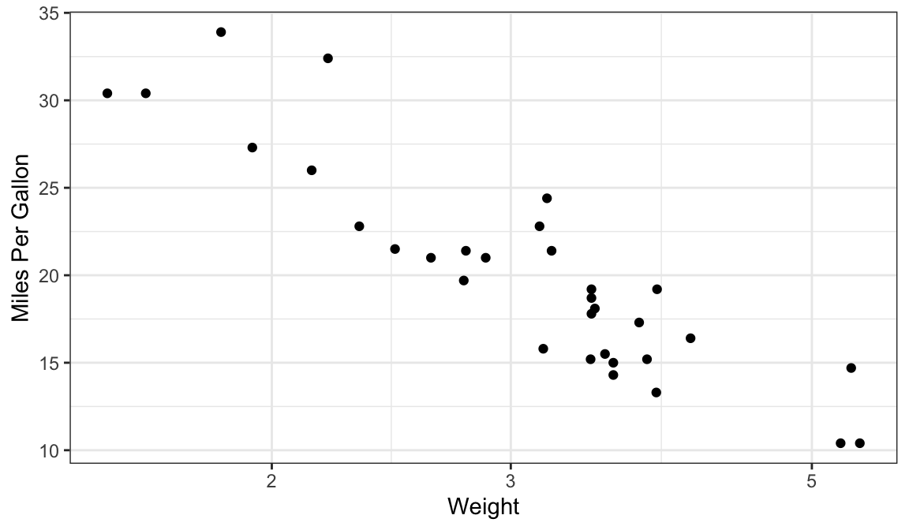
It seems that log-weight is negatively associated with mpg.
It seems that the data approximately fall on a line.
Line Review
Every line may be represented by a formula of the form \[ Y = \beta_0 + \beta_1 X \]
\(Y\) = response variable on \(y\)-axis
\(X\) = explanatory variable on the \(x\)-axis
\(\beta_1\) = slope (rise over run)
- How much larger is \(Y\) when \(X\) is increased by 1.
\(\beta_0\) = \(y\)-intercept (the value of the line at \(X = 0\))
You can represent any line in terms of its slope and its \(y\)-intercept:

If \(\beta_1 < 0\) then the line slopes downward. If \(\beta_1 > 0\) then the line slopes upward. If \(\beta_1 = 0\) then the line is horizontal.
Exercise: Suppose we consider the line defined by the following equation: \[ Y = 2 + 4X \]
- What is the value of \(Y\) at \(X = 3\)?
- What is the value of \(Y\) at \(X = 4\)?
- What is the difference in \(Y\) values at \(X = 3\) versus \(X = 4\)?
- What is the value of \(Y\) at \(X = 0\)?
Simple Linear Regression Model
A line does not exactly fit the
mtcarsdataset. But a line does approximate themtcarsdata.Model: Response variable = line + noise. \[ Y_i = \beta_0 + \beta_1 X_i + \epsilon_i \]
We typically assume that the noise (\(\epsilon_i\)’s) for each individual has mean 0 and some variance \(\sigma^2\). We estimate \(\sigma^2\).
LINEAR MODEL IN A NUTSHELL:
Given \(X_i\), mean of \(Y_i\) is \(\beta_0 + \beta_1 X_i\). Points vary about this mean.
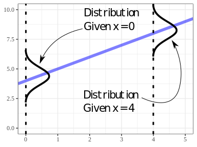
Some intuition:
- The distribution of \(Y\) is conditional on the value of \(X\).
- The distribution of \(Y\) is assumed to have the same variance, \(\sigma^2\) for all possible values of \(X\).
- This last one is a considerable assumption.
Interpretation:
- Randomized Experiment: A 1 unit increase in \(x\) results in a \(\beta_1\) unit increase in \(y\).
- Observational Study: Individuals that differ only in 1 unit of \(x\) are expected to differ by \(\beta_1\) units of \(y\).
Exercise: What is the interpretation of \(\beta_0\)?
Estimating Coefficients
How do we estimate \(\beta_0\) and \(\beta_1\)?
- \(\beta_0\) and \(\beta_1\) are parameters
- We want to estimate them from our sample
- Idea: Draw a line through the cloud of points and calculate the slope and intercept of that line?
- Problem: Subjective
- Another idea: Minimize residuals (sum of squared residuals).
Ordinary Least Squares
- Residuals: \(\hat{\epsilon}_i = Y_{i} - (\hat{\beta}_0 + \hat{\beta}_1X_i)\)
- Sum of squared residuals: \(\hat{\epsilon}_1^2 + \hat{\epsilon}_2^2 + \cdots + \hat{\epsilon}_n^2\)
- Find \(\hat{\beta}_0\) and \(\hat{\beta}_1\) that have small sum of squared residuals.
- The obtained estimates, \(\hat{\beta}_0\) and \(\hat{\beta}_1\), are called the ordinary least squares (OLS) estimates.
Bad Fit:
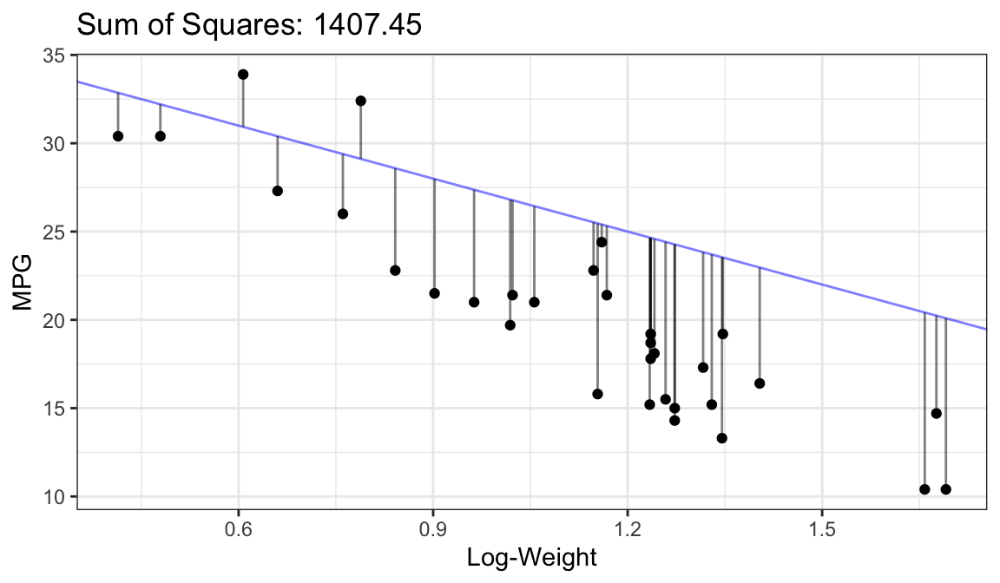
Better Fit:
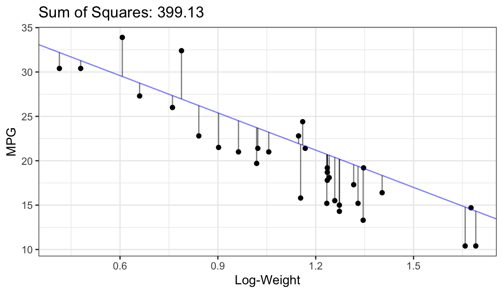
Best Fit (OLS Fit):
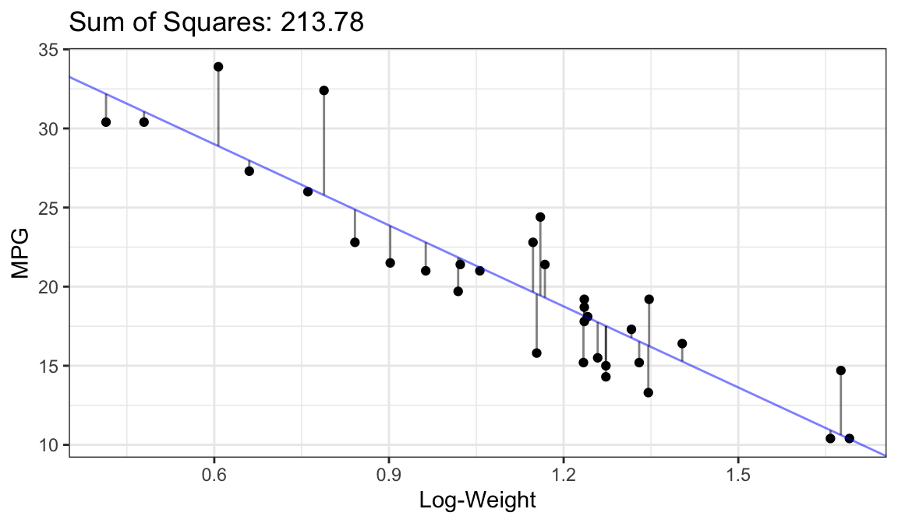
How to find OLS fits in R:
Make sure you have the explanatory variables in the format you want:
mtcars %>% mutate(logwt = log(wt)) -> mtcarsUse
lm()lmout <- lm(mpg ~ logwt, data = mtcars) lmtide <- tidy(lmout) select(lmtide, term, estimate)# A tibble: 2 × 2 term estimate <chr> <dbl> 1 (Intercept) 39.3 2 logwt -17.1
The first argument in
lm()is a formula, where the response variable is to the left of the tilde and the explanatory variable is to the right of the tilde.response ~ explanatoryThis formula says that
lm()should find the OLS estimates of the following model:response = \(\beta_0\) + \(\beta_1\)explanatory + noise
The
dataargument tellslm()where to find the response and explanatory variables.We often put a “hat” over the coefficient names to denote that they are estimates:
- \(\hat{\beta}_0\) = 39.3.
- \(\hat{\beta}_1\) = -17.1.
Thus, the estimated line is:
- \(E[Y_i]\) = 39.3 + -17.1\(X_i\).
Exercise: Fit a linear model of displacement on weight. What are the regression coefficient estimates. Interpret them.
Estimating Variance
We assume that the variance of \(Y_i\) is the same for each \(X_i\).
Call this variance \(\sigma^2\).
We estimate it by the variability in the residuals.
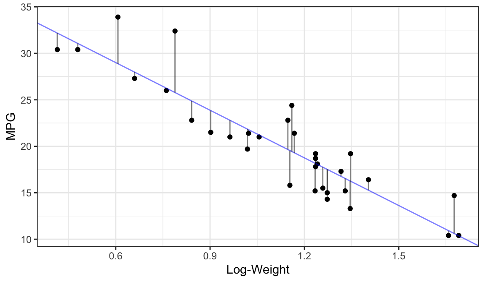
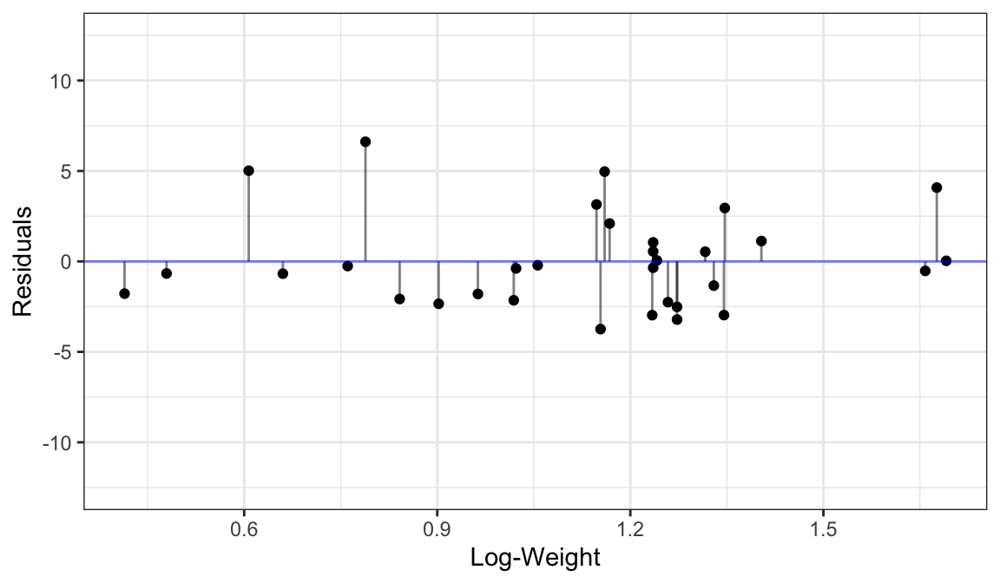
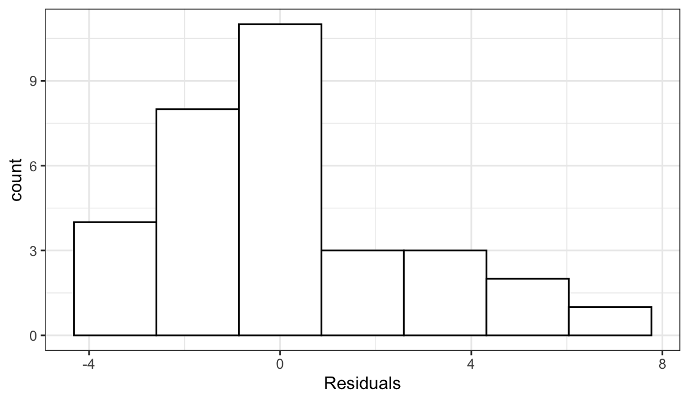
The variance of residuals is the estimated variance in the data. This is a general technique.
- Technical note: people adjust for the number of parameters in a model when calculating the variance, so they no-longer divide by “n - 1”.
In R, use the broom function
glance()function to get the estimated standard deviation. It’s the value in thesigmacolumn.glance(lmout) %>% select(sigma)# A tibble: 1 × 1 sigma <dbl> 1 2.67Estimating the variance/standard deviation is important because it is a component in the standard error of \(\hat{\beta}_1\) and \(\hat{\beta}_0\). These standard errors are output by
tidy().tidy(lmout) %>% select(term, std.error)# A tibble: 2 × 2 term std.error <chr> <dbl> 1 (Intercept) 1.76 2 logwt 1.51The variance is also used when calculating prediction intervals.
Hypothesis Testing
- The sign of \(\beta_1\) denotes different types of relationships between the two quantitative variables:
- \(\beta_1 = 0\): The two quantitative variables are not linearly associated.
- \(\beta_1 > 0\): The two quantitative variables are positively associated.
- \(\beta_1 < 0\): The two quantitative variables are negatively associated.
- Hypothesis Testing:
- We are often interested in testing if a relationship exists:
- Two possibilities:
- Alternative Hypothesis: \(\beta_1 \neq 0\).
- Null Hypothesis: \(\beta_1 = 0\).
- Strategy: We calculate the probability of the data assuming possibility 2 (called a \(p\)-value). If this probability is low, we conclude possibility 1. If the this probability is high, we don’t conclude anything.
- Graphic: 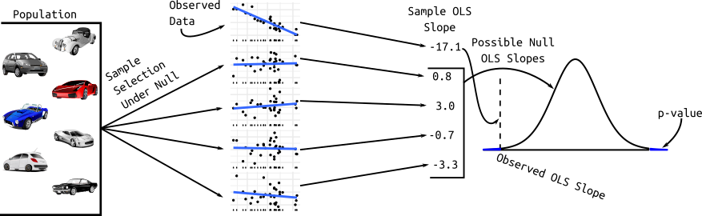
The sampling distribution of \(\hat{\beta}_1\) comes from statistical theory. The \(t\)-statistic is \(\hat{\beta}_1 / SE(\hat{\beta}_1)\). It has a \(t\)-distribution with \(n-2\) degrees of freedom.
- \(SE(\hat{\beta}_1)\): Estimated standard deviation of the sampling distribution of \(\hat{\beta}_1\).
The confidence intervals for \(\beta_0\) and \(\beta_1\) are easy to obtain from the output of
tidy()if you setconf.int = TRUE.lmtide <- tidy(lmout, conf.int = TRUE) select(lmtide, conf.low, conf.high)# A tibble: 2 × 2 conf.low conf.high <dbl> <dbl> 1 35.7 42.8 2 -20.2 -14.0Exercise (8.18 in OpenIntro 4th Edition): Which is higher? Determine if (i) or (ii) is higher or if they are equal. Explain your reasoning. For a regression line, the uncertainty associated with the slope estimate, \(\hat{\beta}_1\) , is higher when
- there is a lot of scatter around the regression line or
- there is very little scatter around the regression line
Exercise: Load in the
bacdataset from the openintro R package.Create an appropriate plot to visualize the association between the number of beers and the BAC.
Does the relationship appear positive or negative?
Write out equation of the OLS line.
Do we have evidence that the number of beers is associated with BAC? Formally justify.
Interpret the coefficient estimates.
What happens to the standard errors of the estimates when we force the intercept to be 0? Why?
Prediction (Interpolation)
Definitions
- Interpolation: Making estimates/predictions within the range of the data.
- Extrapolation: Making estimates/predictions outside the range of the data.
- Interpolation is good. Extrapolation is bad.
Interpolation
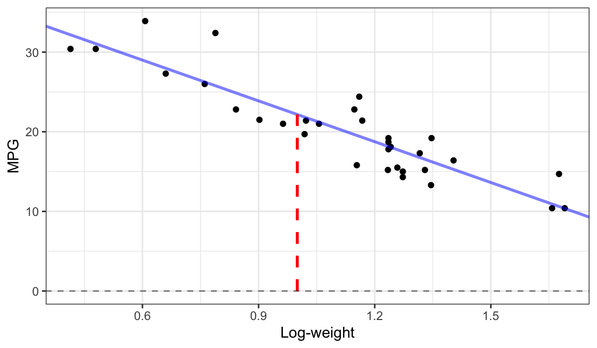
Extrapolation
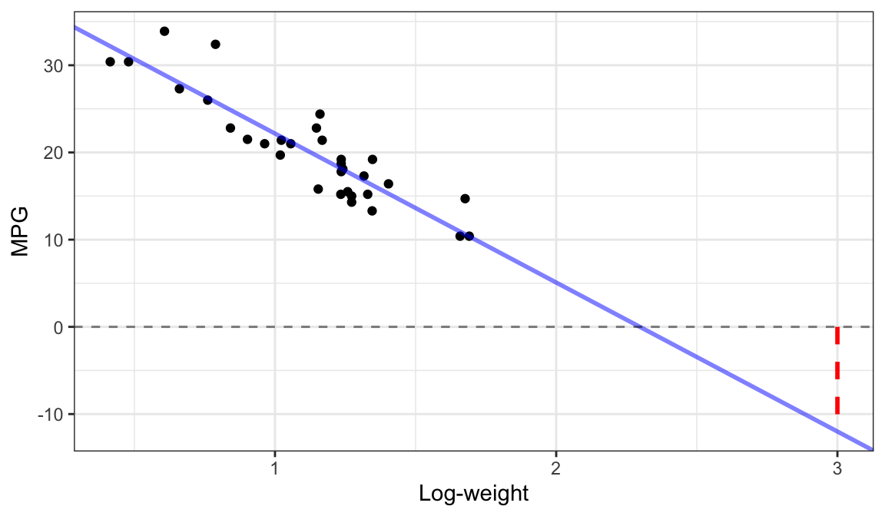
Why is extrapolation bad?
- Not sure if the linear relationship is the same outside the range of the data (because we don’t have data there to see the relationship).
- Not sure if the variability is the same outside the range of the data (because we don’t have data there to see the variability).
To make a prediction:
You need a data frame with the exact same variable name as the explanatory variable.
newdf <- tribble(~logwt, 1, 1.5)Then you use the
predict()function to obtain predictions.newdf %>% mutate(predictions = predict(object = lmout, newdata = newdf)) -> newdf newdf# A tibble: 2 × 2 logwt predictions <dbl> <dbl> 1 1 22.2 2 1.5 13.6
Exercise: Derive the predictions above by hand (not using
predict()).Exercise: from the BAC dataset, suppose someone had 5 beers. Use
predict()to predict their BAC.
Assumptions
Assumptions and Violations
The linear model has many assumptions.
You should always check these assumptions.
Assumptions in decreasing order of importance
- Linearity - The relationship looks like a straight line.
- Independence - The knowledge of the value of one observation does not give you any information on the value of another.
- Equal Variance - The spread is the same for every value of \(x\)
- Normality - The distribution of the errors isn’t too skewed and there aren’t any too extreme points. (Only an issue if you have outliers and a small number of observations because of the central limit theorem).
Problems when violated
- Linearity violated - Linear regression line does not pick up actual relationship. Results aren’t meaningful.
- Independence violated - Linear regression line is unbiased, but standard errors are off. Your \(p\)-values are too small.
- Equal Variance violated - Linear regression line is unbiased, but standard errors are off. Your \(p\)-values may be too small, or too large.
- Normality violated - Unstable results if outliers are present and sample size is small. Not usually a big deal.
Exercise: What assumptions are made about the distribution of the explanatory variable (the \(x_i\)’s)?
Evaluating Independence
Think about the problem.
- Were different responses measured on the same observational/experimental unit?
- Were data collected in groups?
Example of non-independence: The temperature today and the temperature tomorrow. If it is warm today, it is probably warm tomorrow.
Example of non-independence: You are collecting a survey. To obtain individuals, you select a house at random and then ask all participants in this house to answer the survey. The participants’ responses inside each house are probably not independent because they probably share similar beliefs/backgrounds/situations.
Example of independence: You are collecting a survey. To obtain individuals, you randomly dial phone numbers until an individual picks up the phone.
Evaluating other assumptions
Evaluate issues by plotting the residuals.
The residuals are the observed values minus the predicted values. \[ r_i = y_i - \hat{y}_i \]
In the linear model, \(\hat{y}_i = \hat{\beta}_0 + \hat{\beta}_1x_i\).
Obtain the residuals by using
augment()from broom. They will be the.residvariable.aout <- augment(lmout) glimpse(aout)Rows: 32 Columns: 9 $ .rownames <chr> "Mazda RX4", "Mazda RX4 Wag", "Datsun 710", "Hornet 4 Drive… $ mpg <dbl> 21.0, 21.0, 22.8, 21.4, 18.7, 18.1, 14.3, 24.4, 22.8, 19.2,… $ logwt <dbl> 0.9632, 1.0561, 0.8416, 1.1678, 1.2355, 1.2413, 1.2726, 1.1… $ .fitted <dbl> 22.80, 21.21, 24.88, 19.30, 18.15, 18.05, 17.51, 19.44, 19.… $ .resid <dbl> -1.79984, -0.21293, -2.07761, 2.09684, 0.55260, 0.05164, -3… $ .hat <dbl> 0.03930, 0.03263, 0.05637, 0.03193, 0.03539, 0.03582, 0.038… $ .sigma <dbl> 2.694, 2.715, 2.686, 2.686, 2.713, 2.715, 2.646, 2.548, 2.6… $ .cooksd <dbl> 9.677e-03, 1.109e-04, 1.917e-02, 1.051e-02, 8.149e-04, 7.21… $ .std.resid <dbl> -0.68788, -0.08110, -0.80119, 0.79833, 0.21077, 0.01970, -1…You should always make the following scatterplots. The residuals always go on the \(y\)-axis.
- Fits \(\hat{y}_i\) vs residuals \(r_i\).
- Response \(y_i\) vs residuals \(r_i\).
- Explanatory variable \(x_i\) vs residuals \(r_i\).
In the simple linear model, you can probably evaluate these issues by plotting the data (\(x_i\) vs \(y_i\)). But residual plots generalize to much more complicated models, whereas just plotting the data does not.
Example 1: A perfect residual plot
Warning: `qplot()` was deprecated in ggplot2 3.4.0.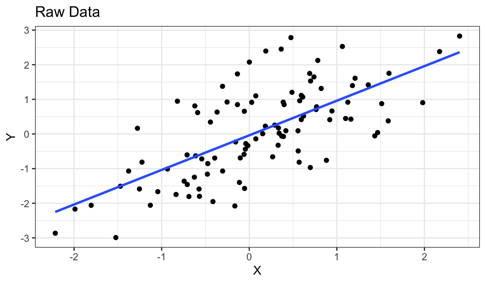
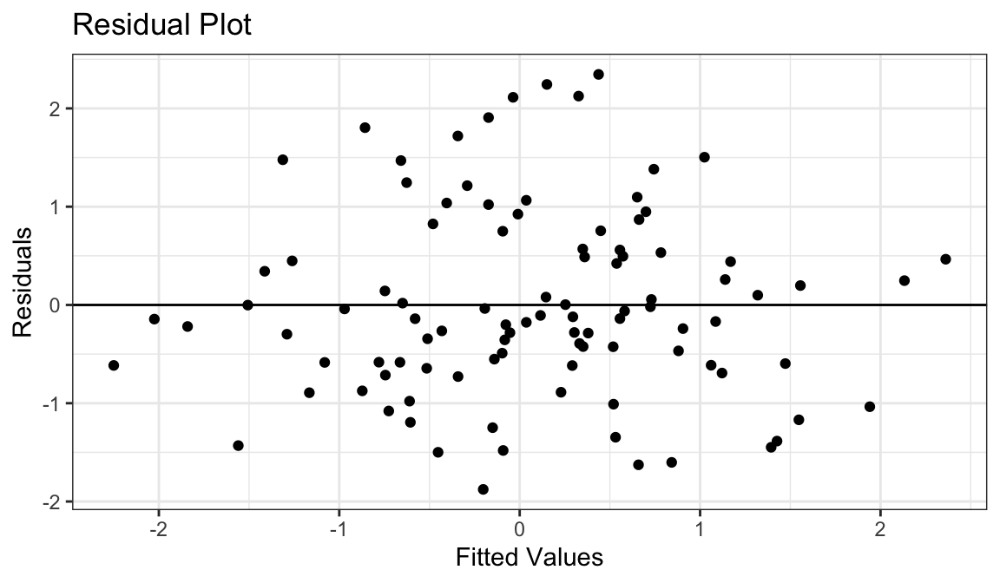
- Means are straight lines
- Residuals seem to be centered at 0 for all \(x\)
- Variance looks equal for all \(x\)
- Everything looks perfect
Example 2: Curved Monotone Relationship, Equal Variances
Generate fake data:
set.seed(1) x <- rexp(100) x <- x - min(x) + 0.5 y <- log(x) * 20 + rnorm(100, sd = 4) df_fake <- tibble(x, y)
`geom_smooth()` using formula = 'y ~ x'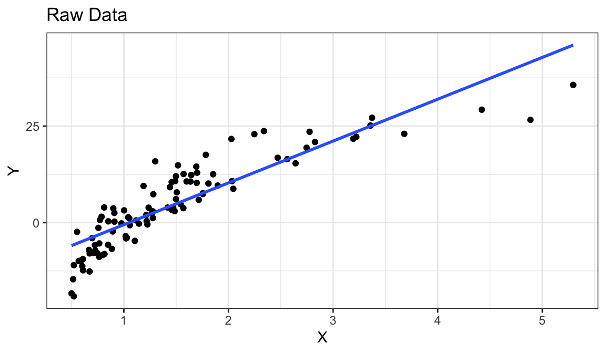
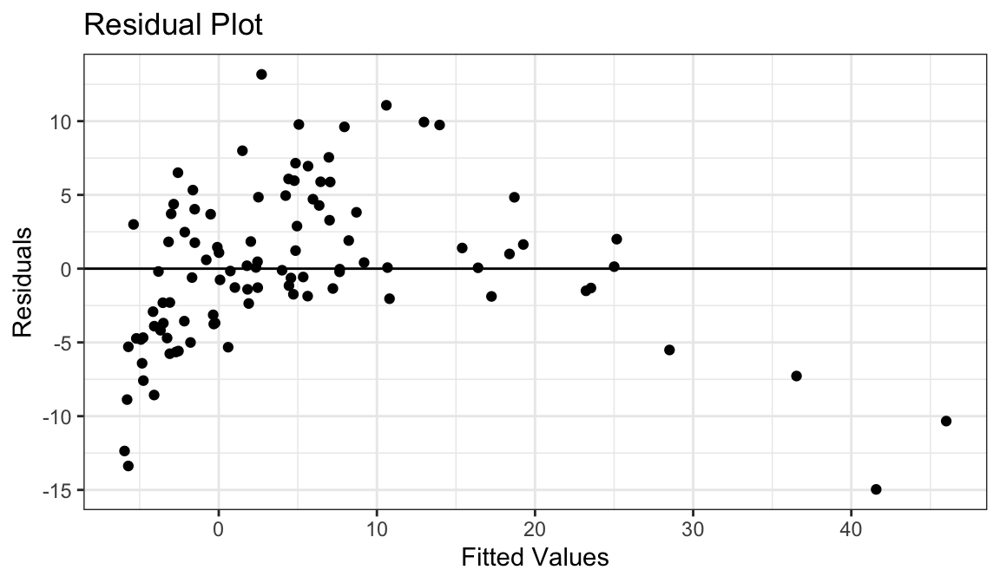
Curved (but always increasing) relationship between \(x\) and \(y\).
Variance looks equal for all \(x\)
Residual plot has a parabolic shape.
Solution: These indicate a \(\log\) transformation of \(x\) could help.
df_fake %>% mutate(logx = log(x)) -> df_fake lm_fake <- lm(y ~ logx, data = df_fake)
Example 3: Curved Non-monotone Relationship, Equal Variances
Generate fake data:
set.seed(1) x <- rnorm(100) y <- -x^2 + rnorm(100) df_fake <- tibble(x, y)
`geom_smooth()` using formula = 'y ~ x'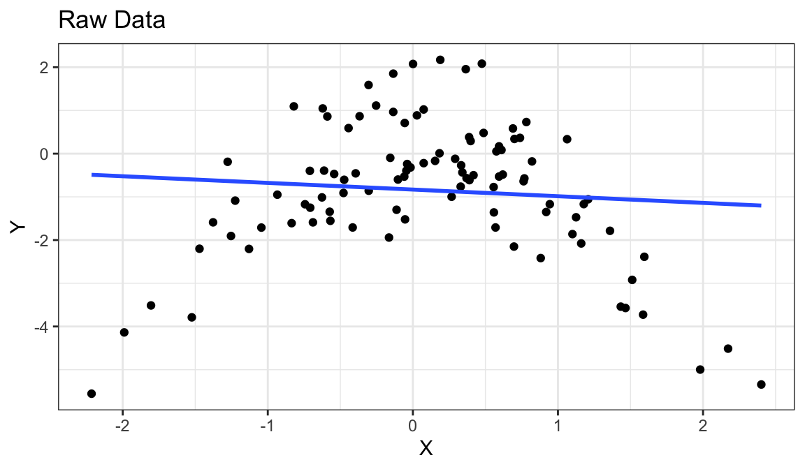
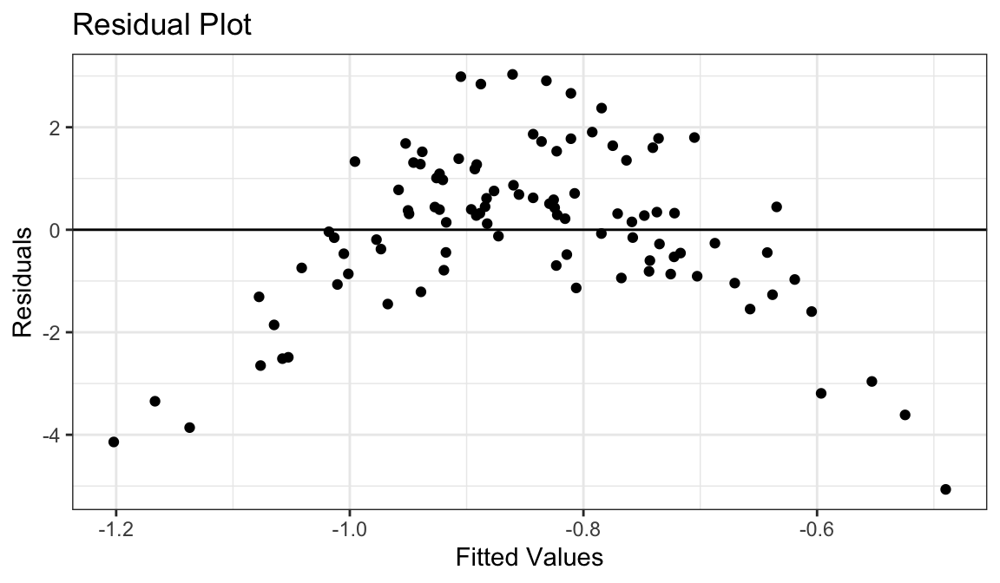
Curved relationship between \(x\) and \(y\)
Sometimes the relationship is increasing, sometimes it is decreasing.
Variance looks equal for all \(x\)
Residual plot has a parabolic form.
Solution: Include a squared term in the model (or hire a statistician).
lmout <- lm(y ~ x^2, data = df_fake)
Example 4: Curved Relationship, Variance Increases with \(Y\)
Generate fake data:
set.seed(1) x <- rnorm(100) y <- exp(x + rnorm(100, sd = 1/2)) df_fake <- tibble(x, y)
`geom_smooth()` using formula = 'y ~ x'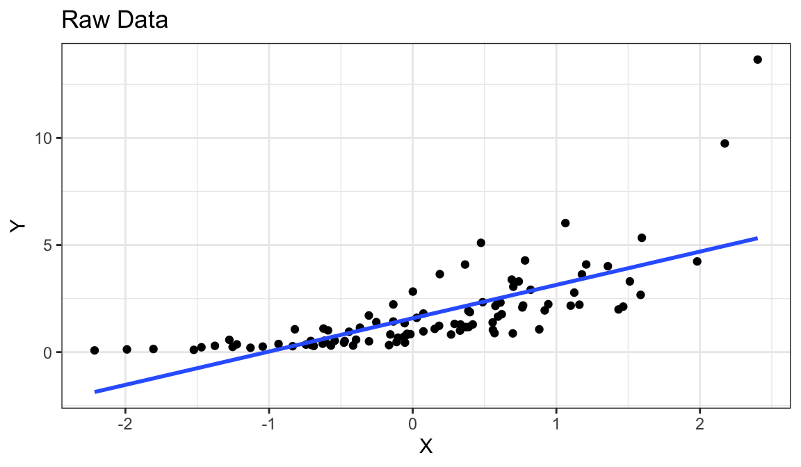
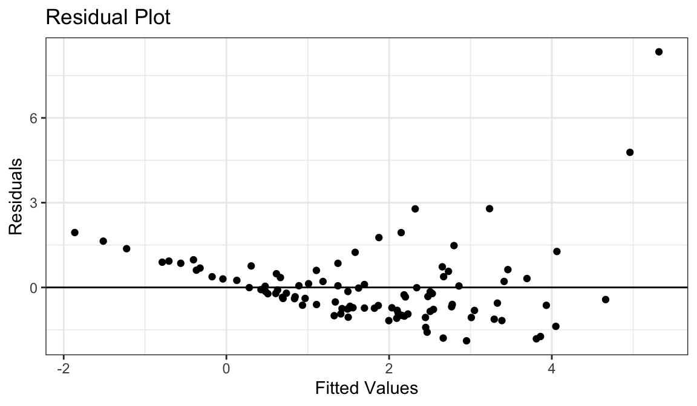
Curved relationship between \(x\) and \(y\)
Variance looks like it increases as \(y\) increases
Residual plot has a parabolic form.
Residual plot variance looks larger to the right and smaller to the left.
Solution: Take a log-transformation of \(y\).
df_fake %>% mutate(logy = log(y)) -> df_fake lm_fake <- lm(logy ~ x, data = df_fake)
Example 5: Linear Relationship, Equal Variances, Skewed Distribution
`geom_smooth()` using formula = 'y ~ x'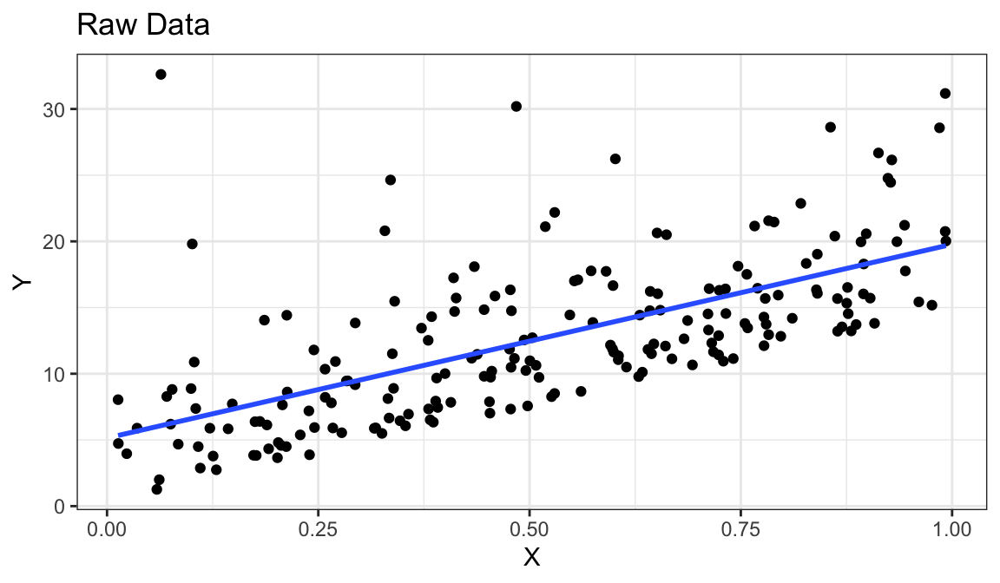
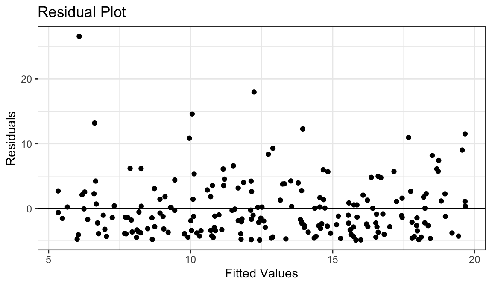
- Straight line relationship between \(x\) and \(y\).
- Variances about equal for all \(x\)
- Skew for all \(x\)
- Residual plots show skew.
- Solution: Do nothing, but report skew (usually OK to do)
Example 6: Linear Relationship, Unequal Variances
Generate fake data:
set.seed(1) x <- runif(100) * 10 y <- 0.85 * x + rnorm(100, sd = (x - 5) ^ 2) df_fake <- tibble(x, y)
`geom_smooth()` using formula = 'y ~ x'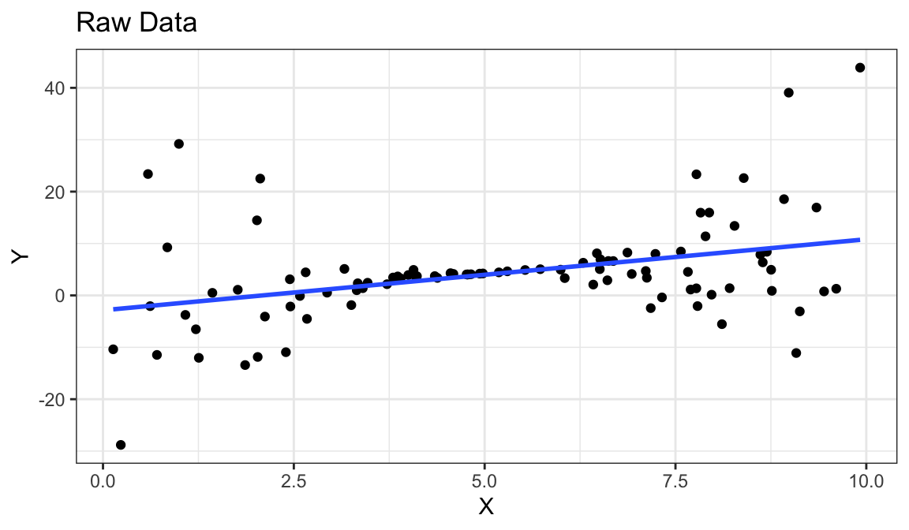
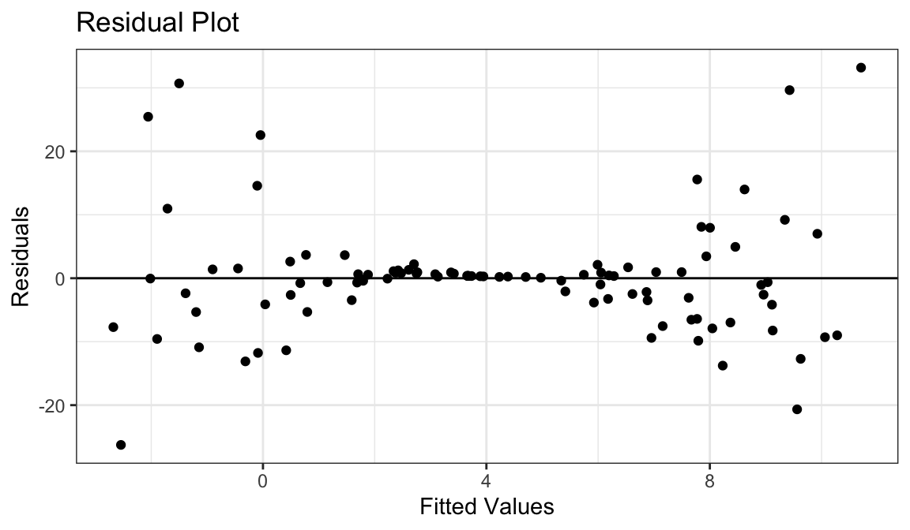
Linear relationship between \(x\) and \(y\).
Variance is different for different values of \(x\).
Residual plots really good at showing this.
Solution: The modern solution is to use sandwich estimates of the standard errors (hire a statistician).
library(sandwich) lm_fake <- lm(y ~ x, data = df_fake) semat <- sandwich(lm_fake) tidy(lm_fake) %>% mutate(sandwich_se = sqrt(diag(semat)), sandwich_t = estimate / sandwich_se, sandwich_p = 2 * pt(-abs(sandwich_t), df = df.residual(lm_fake)))# A tibble: 2 × 8 term estimate std.error statistic p.value sandwich_se sandwich_t sandwich_p <chr> <dbl> <dbl> <dbl> <dbl> <dbl> <dbl> <dbl> 1 (Inter… -2.86 2.01 -1.43 1.57e-1 2.78 -1.03 0.307 2 x 1.37 0.345 3.97 1.37e-4 0.508 2.70 0.00827
Some Exercises
Exercise: From the
mtcarsdata frame, run a regression of MPG on displacement. Evaluate the regression fit and fix any issues. Interpret the coefficient estimates.Exercise: Consider the data frame
case0801from the Sleuth3 R package:library(Sleuth3) data("case0801")Find an appropriate linear regression model for relating the effect of island area on species number. Find the regression estimates. Interpret them.
Interpreting Coefficients when you use logs
Generally, when you use logs, you interpret associations on a multiplicative scale instead of an additive scale.
No log:
- Model: \(E[y_i] = \beta_0 + \beta_1 x_i\)
- Observations that differ by 1 unit in \(x\) tend to differ by \(\beta_1\) units in \(y\).
Log \(x\):
- Model: \(E[y_i] = \beta_0 + \beta_1 \log_2(x_i)\)
- Observations that are twice as large in \(x\) tend to differ by \(\beta_1\) units in \(y\).
Log \(y\):
- Model: \(E[\log_2(y_i)] = \beta_0 + \beta_1 x_i\)
- Observations that differ by 1 unit in \(x\) tend to be \(2^{\beta_1}\) times larger in \(y\).
Log both:
- Model: \(E[\log_2(y_i)] = \beta_0 + \beta_1 \log_2(x_i)\)
- Observations that are twice as large in \(x\) tend to be \(2^{\beta_1}\) times larger in \(y\).
Exercise: Re-interpret the regression coefficients estimates you calculated using the
case0801dataset.Exercise Re-interpret the regression coefficient estimates you calculated in the
mtcarsdata frame when you were exploring the effect of displacement on mpg.
Summary of R commands
augment():- Residuals \(r_i = y_i - \hat{y}_i\):
$.resid - Fitted Values \(\hat{y}_i\):
$.fitted
- Residuals \(r_i = y_i - \hat{y}_i\):
tidy():- Name of variables:
$term - Coefficient Estimates:
$estimate - Standard Error (standard deviation of sampling distribution of coefficient estimates):
$std.error - t-statistic:
$statistic - p-value:
$p.value
- Name of variables:
glance():- R-squared value (proportion of variance explained by regression line, higher is better):
$r.squared - AIC (lower is better):
$AIC - BIC (lower is better):
$BIC
- R-squared value (proportion of variance explained by regression line, higher is better):